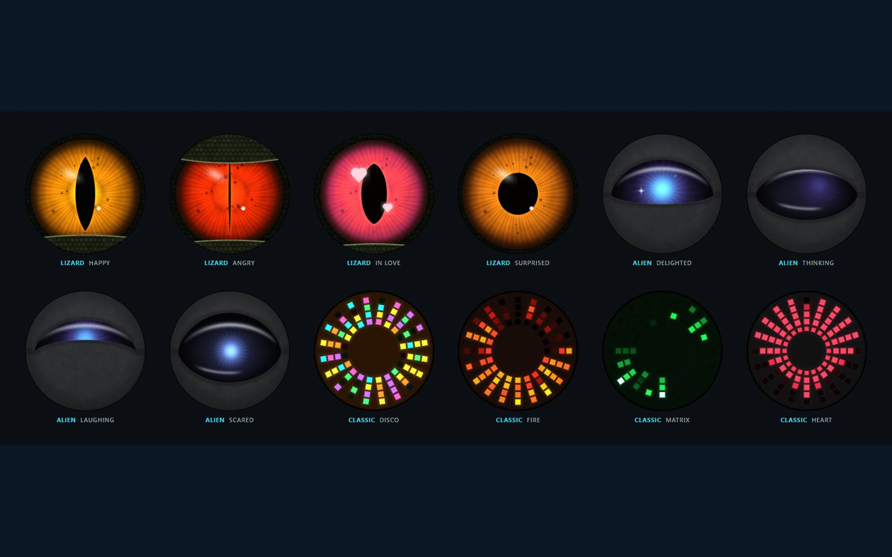
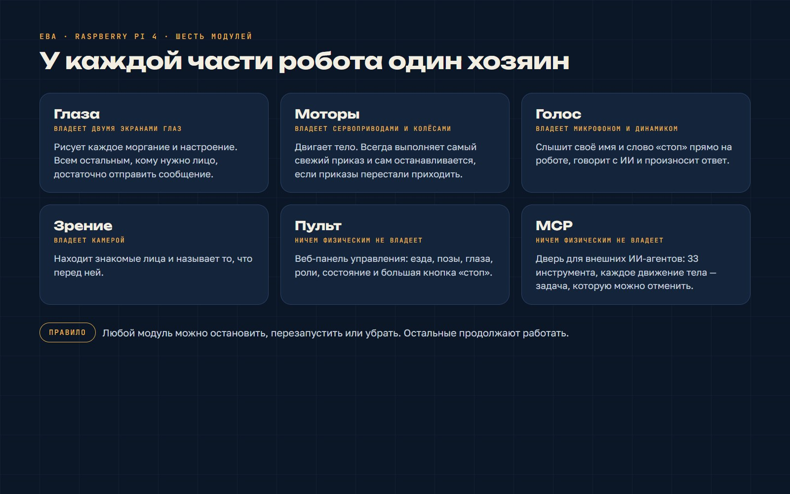
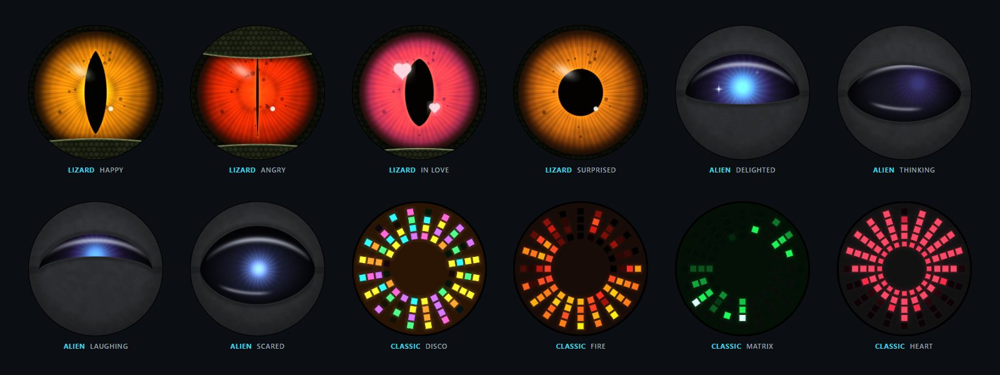
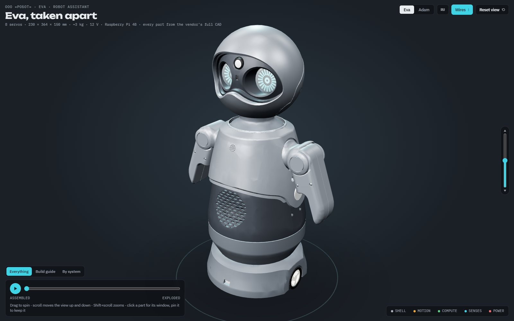
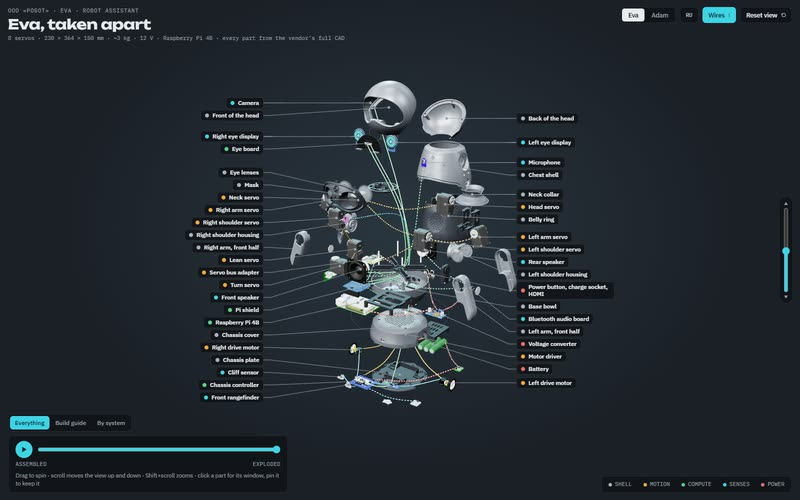
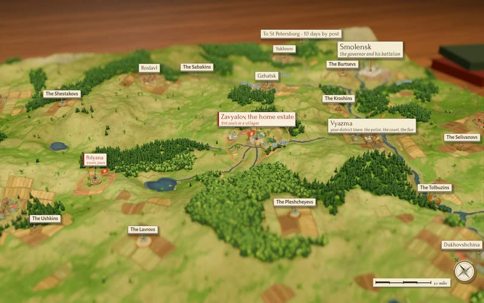
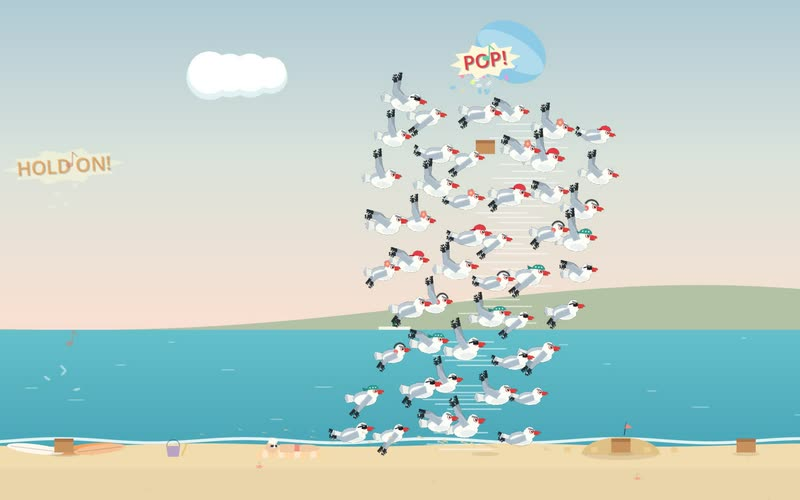

Роботы · Инструменты В работе
Перепрошивая Еву: полный разбор программ

Мы разобрали программы человекоподобного робота, проверили каждую часть и собрали всё заново как шесть небольших программ, каждая из которых владеет одной её частью. А потом дали ей новый мозг.
Ева приехала к нам умеющей двигаться, моргать и отвечать на заданные фразы. Нам нужен был персонаж: тот, кто слушает, видит, кто в комнате, показывает настроение и кого можно передать ИИ-агенту как тело. Для этого пришлось прочитать всё, что на ней работало, и решить, к чему каждой части можно прикасаться.
Что показал разбор
- На двух экранах глаз одновременно рисовали три программы, и время от времени робот зависал. Теперь глазами владеет одна программа, а остальные отправляют ей сообщения.
- Движения с пульта срабатывали дважды, а потом переставали. Слой моторов помнил, где, по его мнению, находится каждый сустав, и пропускал приказы, которые выглядели так же. Теперь он пишет всегда.
- Езда с джойстика отставала, а потом шла по старым командам. Теперь колёса выполняют только самый свежий приказ и сами останавливаются после секунды тишины.
- Она на час оглохла. Микрофон отключался, пока она говорит, а перезапуск посреди фразы оставлял его отключённым навсегда.
Как это устроено теперь
Шесть модулей: глаза, моторы, голос, зрение, веб-пульт и дверь для ИИ-агентов. Модуль — это одна программа, которая владеет одной частью железа и к которой обращаются одним описанным способом. Любой из них можно остановить, перезапустить или убрать, и остальные продолжат работать. Если один модуль лезет в другой, сборка не проходит тесты.
Всё это работает на Raspberry Pi внутри неё. Ничего от Евы не живёт на ноутбуке.
Новый мозг
- Своё имя и слово «стоп» она слышит прямо на роботе, не дожидаясь интернета. Всё остальное, что она слышит, уходит языковой модели.
- Ответы приходят с настроением. Настроение выбирает глаза и двигает тело, сильнее или слабее в зависимости от роли.
- Один список умений (музыка, таймер, помахать, станцевать, посмотреть на меня) служит и ИИ, и пульту.
- Роли: характер, голос, набор глаз и степень живости. Переключаются голосом или с пульта.
- Зрение на самом роботе: знакомые лица и предметы перед ней.
- MCP-сервер с 33 инструментами, чтобы внешний ИИ-агент мог пользоваться ею как телом. Каждое движение — задача, за которой можно следить и которую можно отменить.
Сначала безопасность, потом веселье
Робот с руками — это не чат-бот. Слово «стоп» распознаётся на месте и не ждёт интернета. Колёсам каждую секунду нужен свежий приказ, иначе они останавливаются. Горячие сервоприводы ставят тело на паузу, а говорить она продолжает. На каждой странице пульта есть кнопка остановки.
Что ещё не сделано: камера пока не следит за лицом, Wi-Fi у неё слабый, потому что антенну заслоняет её собственное тело, и никто не измерял, как она ведёт себя в шумной комнате, полной детей. А это и есть главный тест.
Картинки






Обсудить этот эксперимент
Вопросы, идеи, «а попробуйте лучше вот так»: ветка этого эксперимента открыта для всех.
Форум работает на GitHub Discussions. Читать могут все; чтобы писать, нужен бесплатный аккаунт GitHub.
Ещё эксперименты

Роботы · Инструменты Ева и Адам в разобранном виде В нашей мастерской живут два человекоподобных робота. Мы пишем программы, благодаря которым один из них видит, слушает и строит рожицы, и сделали 3D-руководство, которое разбирает обоих до винтика. В работе
Визуальный стиль Одно колесо, четыре стола В Souls & Estates одно колесо мыши теперь ведёт от единственного крестьянского двора до стола с картой центральной России, через четыре диорамы одного и того же места. Можно попробовать
Новая платформа Игра внутри поста на Reddit А что если не нужно уходить из ленты, чтобы поиграть? Мы поместили Gull Chorus, нашу игру про стаю чаек, внутрь поста на Reddit: один пост — один пляж, а под ним таблица рекордов. В работе